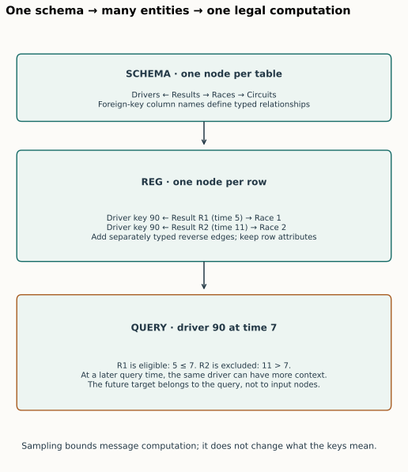
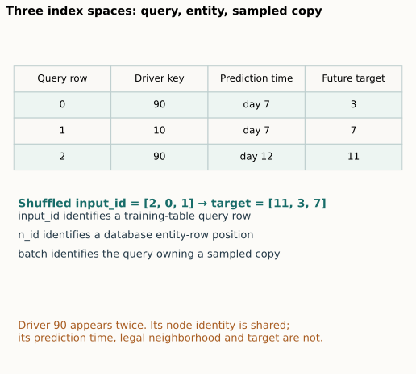
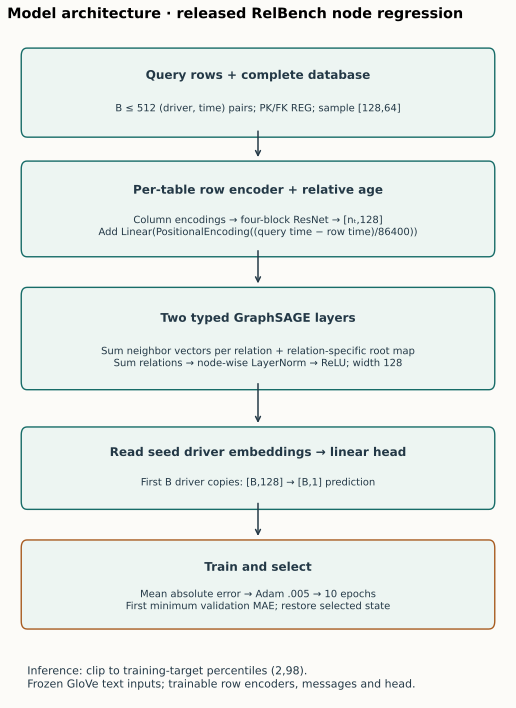

Year 3 · Quarter 4 · Lesson 117
RDL bridge: from database rows to predictions
From graph machinery to a database prediction
Your win: start with a relational schema and a prediction request, construct the right graph, and explain exactly which rows can influence the prediction. Then follow a complete RDL training run on real Formula One data.
Student notebook · Executed solution · Quick reference · Reproduction protocol
Take Sections 1–4 as the first study session. Continue with the model trace and notebook in a second session. The full benchmark is an author-reference experiment; running its cells is not a substitute for defending your own construction.
1 · The bridge: a prediction request determines a computation¶
Lesson 115 split a graph predictor into encoder, message passing, and head. Lesson 116 checked that the training loop actually updates the intended model. Both started with an existing graph. A business database supplies tables, keys, timestamps, and a question. This lesson fills that missing first step.
Suppose you want to predict a driver's average finishing position over the next 60 days. The driver's own table can describe nationality and date of birth. Their previous races live elsewhere. Race results connect the driver to races and constructors; races connect to circuits. The information is distributed, but the primary–foreign key relationships already identify which rows belong together.
Relational deep learning (RDL) learns from that connected data by representing rows as graph nodes, key references as edges, and column values as node inputs. The model learns how to combine context for the chosen prediction task. This is the blueprint in Fey et al., §§2–3 and Figures 2–4.
It does not remove the need to define the target, decide when information becomes available, interpret table semantics, or evaluate fairly. A competent feature engineer can also use related tables. The empirical question is whether the learned pipeline improves the chosen accuracy, effort, or maintenance tradeoff under matched information access. Keep this distinction when assessing the course mission.
Retrieve before continuing. What does a foreign key tell you that a numeric feature does not? Why does knowing a result today fail to authorize it for a prediction made last year?
Check the distinction
A foreign key identifies another entity; its numeric magnitude normally has no useful distance interpretation. A row can be present in today's archive while remaining unavailable at a historical query time. Representation and availability are separate contracts.
2 · Three graphs, three different questions¶
A primary key uniquely identifies a row within its table. A foreign key references a primary key in another table. A node type records which table supplied a row; an edge type records the relationship used to connect two rows. Two columns pointing to the same table can represent different relationships, so preserve their column names in relation types.
| Object | A node represents | What it tells us |
|---|---|---|
| Schema graph | One table | Which kinds of entities can be related |
| Relational entity graph (REG) | One row | Which particular entities are related |
| Query computation graph | A sampled copy of a row for one query | Which permitted messages are computed for this prediction |

For the schema drivers ← results → races → circuits, the REG has one node for every individual driver, result, race, and circuit row. A result is itself a node, not merely an edge: it has useful attributes such as finishing position. This preserves the grain of a fact table—the event represented by each row. Fey §2.1, §3.1–3.2.
Worked key mapping. The drivers table is stored in order [90, 10, 40]. Four result rows contain driver keys [40, null, 90, 40]. Their graph connections, expressed as (result row position, driver row position), are (0,2), (2,0), (3,2). Key 40 maps to row position 2, not position 40. The null creates no relationship. Duplicate primary keys or unknown non-null foreign keys require an explicit policy; our teaching constructor rejects them rather than guessing.
The released RelBench data has already remapped primary keys to contiguous row indices. Its loader censors rows after the test cutoff and marks references to removed rows as null. Our audit verifies the actual resulting graph; the notebook also practices arbitrary-key mapping so the release convention does not become an accidental general assumption. Pinned graph constructor.
Why add reverse edges?¶
The stored foreign key points from a result to its driver. To let a driver collect messages from results, the computation also needs the reverse relationship. The release creates separately typed directions, for example results → drivers and drivers → results. The neural transformations can differ by direction. This does not make the database constraint bidirectional or invent a causal relationship.
Task 1 — construct the relationships. Implement foreign_key_edges(primary_keys, foreign_keys). CHECK tests noncontiguous keys, repeated references, nulls, duplicate keys, and unknown references. The complete real-data audit applies the same mapping to every foreign-key column and compares all graph edges.
3 · The training table describes questions, not new entity features¶
A query is an entity ID paired with a prediction time. A target window is the future interval from which the answer is computed. A training table contains the query's entity ID, timestamp, and target. It supplies supervised examples; the target column is not an input feature attached to every entity node.
For rel-f1/driver-position, each query asks for a driver's mean finishing position over the next 60 days. If two eligible future race finishes are 3 and 7, the target is (3+7)/2 = 5. Those results help define the label but cannot be read as predictor inputs at the earlier query time. The same driver's earlier results may be legitimate input. Task definition and Table 2.
A single driver can appear at multiple query times with different labels and different neighborhoods. A static label array indexed by driver ID cannot represent that task. During sampling, RelBench carries input_id, the original query-row index. n_id instead maps a sampled node to its global entity-row index. These two index spaces are not interchangeable. Released target transform.

Worked trace. Query rows 0 and 2 both refer to driver 90, but their targets are 3 and 11. Query row 1 refers to another driver and has target 7. A shuffled batch with input_id=[2,0,1] must receive [11,3,7]. Looking up a label by driver ID would collapse the two predictions for driver 90.
Task 3 previews the exit condition: your label attachment function must preserve those query identities even if the same entity is repeated. The notebook implements this after Task 2 so you can see why both graph history and label identity depend on the query.
4 · Freeze the query time across the whole neighborhood¶
Let t be the query time and τ(v) the availability timestamp of row v. A time-consistent neighborhood may include v only when τ(v) ≤ t. A genuinely timeless dimension row can be treated as available without a finite timestamp. An undated row is not automatically timeless: that is a data contract to justify.
The cutoff is this common upper bound on input availability. The hop count limits how many edges a message can cross. Both restrictions apply: two-hop reachability alone does not authorize a future result, and an old timestamp alone does not make an unrelated row reachable. Fey §3.3 and Appendix A–B.
Consider a small teaching schema with query seed → timeless dimension → event. Passing through the dimension must not reset the cutoff or disable filtering on the next event. This schematic path isolates the rule; the real F1 driver graph has its own foreign-key paths. Hold the original query time fixed at every hop. The paper's Appendix A filters the neighbor's timestamp. Algorithm 1 prints a receiver timestamp in its edge filter; this lesson follows the neighbor-filter definition and checks sampled row timestamps explicitly.
Predict first. The query is at time 7. A result at time 5 and another at time 11 share a timeless intermediate node. Which result can send a two-hop message? Change the cutoff to 11 and predict which computation changes before using the control.
Reveal the trace
At 7, include the time-5 result and exclude the time-11 result. At 11, both pass the inclusive boundary. The intermediate node's lack of a timestamp changes neither rule. The widget is an exhaustive teaching neighborhood; the benchmark additionally samples a bounded number of neighbors.
Task 2 — preserve the cutoff. Implement temporal_nodes(edges, times, seed, cutoff, hops). CHECK includes a future row behind a timeless node, an equality-boundary row, and zero-hop queries. Then apply your code to a real F1 driver neighborhood and assert that all selected dated rows satisfy the query cutoff.
Event time is not a complete availability history¶
Lesson 109 distinguished the date an event happened from the date its data became usable. The public F1 archive provides event dates, not complete ingestion and revision histories. We can verify conformance to the released clocks; we cannot infer that every historical feature value was already available exactly as recorded today. Temporal sampling also does not constrain when preprocessing statistics were fitted. These are separate audit items.
5 · Model architecture: trace one sampled RDL prediction¶
Fey specifies an architectural blueprint, not a unique GraphSAGE implementation. Our empirical companion uses the RelBench RDL release: per-table row encoders, relative-time encoding, two heterogeneous GraphSAGE layers, and a scalar regression head. The complete local model and trainer are visible in the notebook and canonical source.

5.1 Encode columns into row vectors¶
For a node type T, collect its sampled rows into a TensorFrame: tensors grouped by semantic column type, with column identities retained. Numeric values receive numerical encodings; categories receive learned embeddings; timestamps receive time encodings. Text is first converted to frozen 300-dimensional GloVe-based sentence vectors in this release. Keys specify graph structure and are removed from predictive feature columns.
Each table has its own four-block PyTorch Frame ResNet row encoder, with internal width 128, producing H_T of shape [n_T,128]. Here n_T is the number of sampled copies of that table's rows, not necessarily the number of unique database entities. A residual block learns a correction to its input representation. The modality encoders and row network turn unlike columns into a common-sized vector; the graph network then combines vectors across tables. Revisit Lesson 75 for the preprocessing boundary, after following this trace.
The benchmark materializes feature statistics on the database censored at the test cutoff. That reproduces the release; it is not train-only preprocessing. The declared run pins the text checkpoint and fixes the stochastic type-inference sample at seed 42, then resets each training seed. Historical inferred types and original random states were not published as a complete experiment identity.
5.2 Encode how old a neighboring row is¶
For a sampled copy of row v in query q, compute age = (seed_time[q] − time[v]) / 86400, measured in days. A sinusoidal positional encoding maps this scalar to 128 coordinates; a learned table-specific linear map transforms it. Add the result to the row embedding. batch identifies which query owns the sampled copy, so the same historical row can receive a different relative age for two queries.
This encoding communicates age; the sampler enforces eligibility. An age vector alone does not prevent future access. In the release, dated columns can also be encoded as absolute timestamp features. Absolute dates, relative ages, and temporal filtering have different roles. Temporal encoder source.
5.3 Aggregate typed messages¶
For one directed relation r and receiving row v, the selected sum-aggregation GraphSAGE operator computes
m_r(v) = W_neighbor,r Σ[u in N_r(v)] h_u + b_r + W_root,r h_v.
N_r(v) is the set of sampled senders connected through relation r. Each W is a learned matrix; b is a bias. Sum aggregation preserves multiplicity: three related events can produce a different vector from one otherwise identical event. It does not divide by neighbor count.
The heterogeneous layer sums relation outputs for each receiving node type. Notice that each relation has its own root transform; this is not necessarily equivalent to summing all neighbor messages and adding one shared root transform afterward. Then node-wise layer normalization rescales each row across its channels, and ReLU replaces negative coordinates with zero. Repeat the layer twice. Width stays 128.
Numeric mechanism trace. A receiver has scalar value 2, with neighbors 3 and 5. Set the neighbor weight to 2, root weight to 1, and bias to 0. The relation output is 2×(3+5)+1×2=18. A mean-aggregation variant would give 2×4+2=10. This is a scalar explanation of one operator, before normalization and nonlinearities; it is not a trained benchmark prediction.
Two layers give at most two edges of influence in the sampled graph. They do not expose every useful relational path. For example, customer → purchase → product → purchase → customer needs four edge traversals in this representation. Fey §4.3 makes this limitation an architectural research opportunity.
5.4 Read out the query and train¶
Disjoint temporal sampling keeps each query's computation separate. The first B driver embeddings correspond to the B seed queries. A linear head maps [B,128] to [B,1], one predicted finishing-position value per query.
For targets y_i and predictions ŷ_i, mean absolute error is MAE = Σ|ŷ_i−y_i| / B. The training loss backpropagates through the head, graph layers, and trainable row encoders. Frozen GloVe vectors remain frozen. Adam uses learning rate 0.005. The selected schedule has 10 complete epochs and no subsampling of query rows.
At evaluation, the release clips predictions to the training target's 2nd and 98th percentiles. Select the first epoch with the lowest validation MAE, restoring the complete selected model state. Uniform neighbor sampling means reevaluating that checkpoint can produce a different validation number from the selection-time estimate. Preserve and report both instead of silently treating them as identical.
6 · What the full selected reproduction establishes¶
The empirical target is Robinson et al., RelBench v1 Table 7, rel-f1/driver-position, RDL column. It complements Fey's blueprint. It is not one of the older beta tables in Fey's Appendix D, which use different tasks and database versions. RelBench Tables 7 and 9.
Predict before reading the measured result: if a released pipeline completes and reproduces the model outputs, what additional evidence would you need before claiming historical paper identity?
Five complete full-data runs. Author-reference evidence, separate from student execution.
| Split | Mean MAE | Sample seed SD | Paper mean | Descriptive verdict |
|---|---|---|---|---|
| val | 3.18180 | 0.04348 | 3.193 | CLOSE |
| test | 4.13392 | 0.15660 | 4.022 | CLOSE |
All 6,295 final query predictions were independently rescored and compared with the original released model on the same sampled inputs. Maximum raw-output discrepancy: 2.86e-06, within the predeclared numerical tolerance. The complete graph has 74,063 rows at the release test cutoff.
Recorded pilot plus five-fit worker resource estimate: USD0.0577. Build/startup/storage overhead is not itemized; the plan reserves USD3.499264 for overhead beneath the USD10 aggregate cap. See all seeds and protocol status.
The selected released-protocol experiment is COMPLETE. Historical identity and whole-paper parity remain NOT_ESTABLISHED. Score verdicts compare means only; they are not statistical equivalence tests. Live Colab remains NOT_CHECKED.
| Contract | Selected experiment |
|---|---|
| Data | All nine released F1 tables, censored at the release test cutoff; hash-checked archives |
| Queries | 7,453 train; 499 validation; 760 test; original ordering and temporal splits |
| Fits | Five fresh seeds 0–4, each 10 complete epochs |
| Model | Four-block row ResNets; width 128; two heterogeneous GraphSAGE layers; sum aggregation; scalar head |
| Sampling | Uniform, disjoint temporal neighborhoods; batch size 512; source fanouts [128,64] |
| Optimization | Adam .005; mean L1; first minimum validation checkpoint |
| Reporting | MAE on every query; inference clamped to train percentiles; sample seed SD |
| Comparison | Published means 3.193 / 4.022; predeclared descriptive CLOSE tolerance 0.2 MAE |
The paper's hyperparameter table says 128 neighbors; the selected release halves that at the second hop. The package preserves [128,64] and records the distinction. The five historical seeds are not specified as a recoverable sequence; 0–4 is our declared sequence. Current libraries and type-inference state are also recorded deviations. A close score does not erase them.
Interpret the scope. Independent scoring checks metric arithmetic and population identity. Original-model replay on the same sampled inputs checks the neural computation. Timestamp checks test the declared sample boundary. None proves that the public archive reconstructs real ingestion history, that the whole paper has been reproduced, or that this model beats engineered features on your database. We do not rerun a tuning search against the test result to make the number look closer.
7 · Read the whole Fey paper with a claim ledger¶
Read the final ICML paper, not just the abstract. Use this sequence to connect its pieces:
| Reading | Write this artifact before moving on |
|---|---|
| §§1–2, Figures 1–3 | Define one entity, prediction time, target window, and legal input set |
| §§3.1–3.3, Figure 4 | Draw schema, entity, and query computation graphs for the same example |
| §3.4 and Appendix A–B | Trace one typed message and identify the timestamp checked at every hop |
| §4 and Figure 5 | Name one unresolved limitation of sampling, graph design, architecture, or training |
| §5 | Explain the connection to statistical relational learning, tabular ML, and earlier relational GNNs |
| §6 and Appendices C–D | Separate the beta benchmark's tasks and evidence from the later RelBench reproduction here |
Section 4 is a research agenda: scaling across databases, alternative graph constructions, SQL-inspired operators, multitask learning, and multimodal/foundation models. These possibilities are not all implemented or experimentally established by the position paper. Section 5 also makes clear that relational learning has a history; the planned Lesson 118 returns to Cvitkovic's earlier approach.
For a skeptical reading, ask: what information can an engineered baseline access? What is actually learned? What preprocessing uses future distributions? How many hops reach the relevant signal? What observation would contradict the claimed advantage? This is how the bridge serves the course mission without converting the position paper's motivation into a universal performance claim.
8 · Lab, exit defense, and spaced return¶
The default notebook downloads the small hash-checked real F1 database and applies your three functions to a real neighborhood. It also uses tiny counterexamples to expose indexing and time errors. The full model and training loop are visible afterward; the expensive reproduction gate defaults off. Three CHECK cells provide immediate feedback. Do not copy the solution before making a prediction and attempting each function.
Submit your functions, generated l117-task-report.json, and this defense:
- Explain why a result row is a node and why both directed relationships are useful.
- Trace one prediction from query row through legal input rows, encoders, messages, head, and target.
- Explain why
input_id,n_id, andbatchmean different things. - Name two temporal claims the release checks and two historical claims it cannot establish.
- State the reproduction result and its limits without turning a selected task into a whole-paper claim.
Tomorrow, redraw the three graphs without notes. In a week, explain why two queries about the same driver need separate computation graphs. Interleave that exercise with the missing-update diagnosis from Lesson 116.
Learner status: PENDING_WRITTEN_DEFENSE. Ask the teacher follow-up questions about any step, or paste your graph and EXIT ticket for feedback. Author execution verifies the package; your explanation supplies the learning evidence.